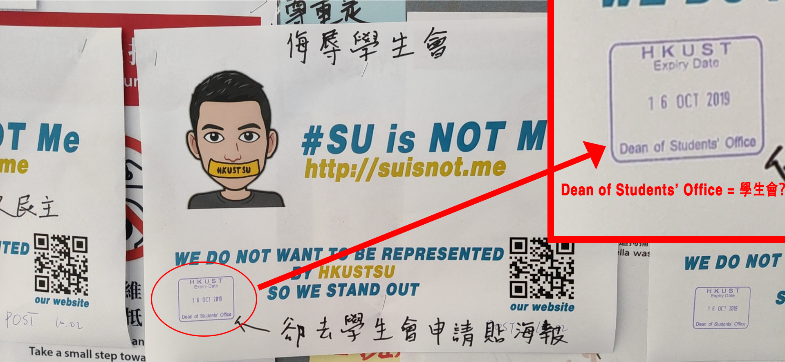
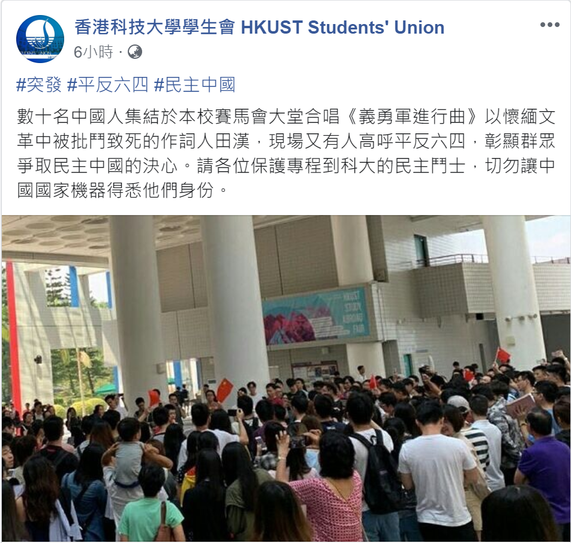
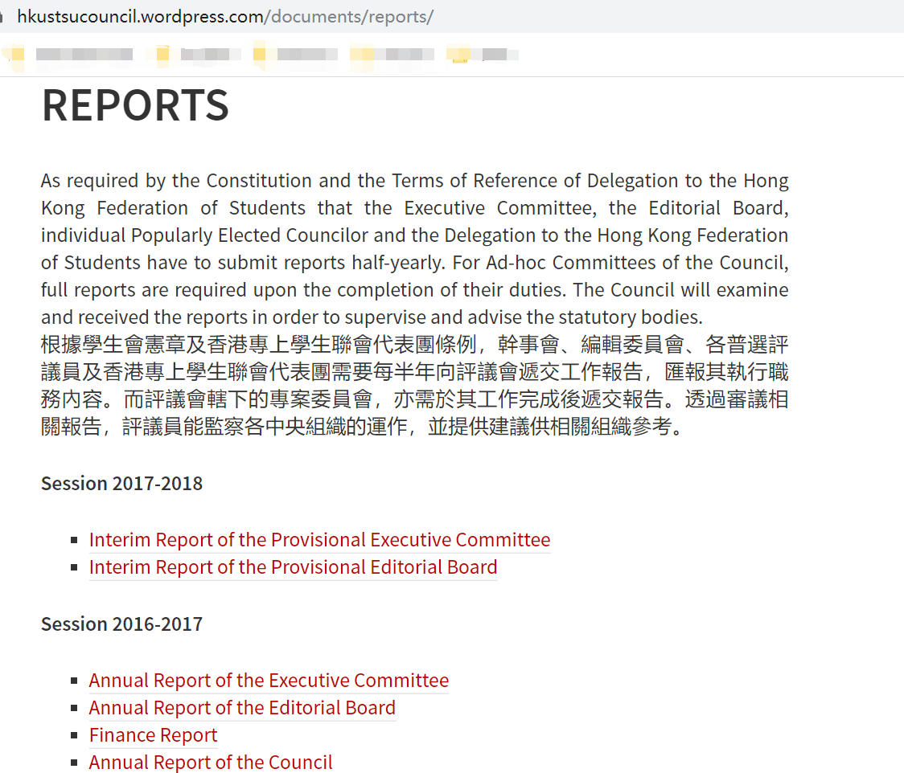

SUisnot.Me
為什麼叫這個名字？
此處的SU指的是香港科技大學的學生會。和很多香港其它大學的學生會一樣，它最近一直在積極地參與政治活動並維持著鮮明的政治立場，而且試圖在各種社交媒體代表全體科大學生來介入政治鬥爭。域名的意思是我的立場不想被SU代表。
為什麼會有這個網站?
在9月28日發起的快閃被SU的Facebook賬號曲解汙蔑、Facebook賬號下留言被刪、大字報被SU全權管理並壓縮發言空間...種種困境讓我們意識到我們需要一個可以發聲的平台。
SU反應速度測試
于2019年9月30日下午一點前我們貼在Big Character Wall的網站宣傳圖第一次被撕除，值得注意的是此張貼已經在DSTO報備過。
于2019年10月2日下午三點前我們的第二次文宣被寫上了如下字樣。對此我們覺得這位SU手足需要努力提高自己的英語水平，DSTO并不是學生會。我們也感謝這位SU手足還原了我們新LOGO所表達的場景。

HKUST SU做了哪些惡？
- 2019年9月28日-官方社交媒體賬號曲解汙蔑快閃活動
- 2018年及之後報表謎團
- 2019年10月2日-科大食堂扮煮飯仔(過家家)function-“我的自由是不給你們自由”
事件起因：當日下午，港科大學生自發了atrium慶祖國生日唱歌活動，現場齊唱了《國歌》、《歌唱祖國》、《東方之珠》等歌曲。活動全程視頻
事件經過：香港科技大學學生會(HKUSTSU)隨後在其Facebook和Instagram官方賬號發佈不實内容（内容見圖），并且在學生投訴后不理會刪除貼文的訴求。

事件後續：許多科大學生在官方賬號下留言闢謠，但是學生會非但不予理會，而且還刪除了諸多理性留言。一個帶頭喊著“人權”和“言論自由”的組織，卻做著顛倒黑白、禁錮他人自由言論的事。
背景介紹：根據學生會評議會網站介紹，“學生會評議會是香港科技大學學生會四大中央架構之一，擔當會內立法機關的角色...根據學生會憲章及香港專上學生聯會代表團條例，幹事會、編輯委員會、各普選評議員及香港專上學生聯會代表團需要每半年向評議會遞交工作報告，匯報其執行職務內容”。
故事呈現：如下圖，此欄目顯示，學生會沒有于2017-2018年公佈其財政報表以及所有年終報表；更爲驚人的是，2018-2019年的所有報告均為空白，不知道是因爲學生會的領導落入時空裂縫、和外界有巨大時差，還是因爲網站資料遭到匿名黑客竊取、不翼而飛。

敬請期待
大家如何評價SU?(摘自SU的Facebook評論頁面)
"Garbage students' union; wasted most of their funds on their own political interests rather than creating something of value."
"I do not know why they are so afraid that they deleted my comment and blocked me. The SU apparently lied in their post 《科大大字報牆事宜》according to the univerisity. The SU is an organization that is independent of the university and thus it has no mandate to follow university's guidelines. As a consequence, it insists to pursue its one-sided view and kill all different voices. Of course, you are not qualified to represent all the students. In the same time it exploits sizable profit by monopolizing vending machines, collecting fees from innocent new students. This is unreasonable and must be stopped. Now a reform should be under way."
"SU cannot represent any students in HKUST. It is used by other people but they did not know or they did not want to know. It is a dirty orgonization."
"The SU maintains an outdated website with limited information. The most recent news in the News Section was dated November 15th, 2015, nearly four years ago. We could not find any details on its current operation, which is rather opaque. The flow of its income and expenses is just mysterious, keeping us wondering where the money comes from and where it goes. Yes, we now know that it allocated more than 1m hkd as ACESF. However, members and outsiders are totally kept in dark about the decision process. Did all the members agree with this allocation of their own money? Not awesome at all."
"Filled with fake news and fuels an unfair and untrue generalization"
"Has political stand, not official, not represent student’s opinion!"
"Lack of objective facts, full of "formal" emotional opinions. We pay for it every semester. But it spends much more money and time on biased politic activities than creating value for HKUST students."
你可以做什麼?
- 把我們的網站傳播出去讓更多有正義感的人看到
- 加我們的微信或者通過在github平台提issue: (1)充實潤色網站內容 (2)對網站架構本身提出意見 (3)指出SU的不公正的行為並提供證據[最重要]
- 如果你有豐富的前端開發經驗，也可以聯系我們和我們並肩作戰
- 有一定關注度之後，一起出英文version
- "繳學費的時候會有100刀的SU volunteer。請大家一定一定不要繳。具體操作就是1) 網上繳費的同學直接少繳100刀就好。2) 申請以PGS分期繳費的同學在一開始的申請表上少填100刀。 🙏"
- 不想被代表的科大人，讓我們一起狠狠給SU一耳屎 -

Facts matter.
留下你對SU的看法
希望你可以理性平和地加入到討論中來，我們不會像SU一樣惡意刪除評論。
微信打開鏈接和電腦/手機瀏覽器打開鏈接會有兩個獨立的評論區。爲了讓大家能在一個討論區討論，我們强烈建議wechat用戶使用瀏覽器重新打開網頁